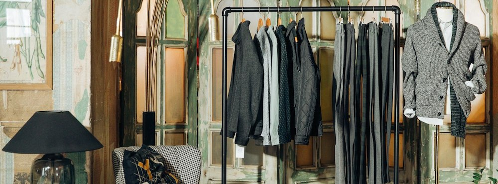
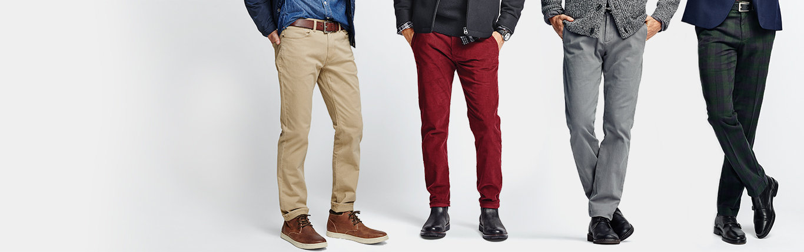

Dockers® – бренд, который придумал пятницы в стиле кэжуал и во всем мире стал синонимом брюк чинос.
Вот уже 30 лет брюки линейки Khaki (Хаки) служат символом Dockers®. Их представили публике в 1986 году, и с тех пор бренд неустанно совершенствует их. Качество — бескомпромиссное. Стиль — универсальный и узнаваемый. Никогда еще брюки не были такими стильными.
Dockers® всегда ставил своей целью создание практичного и стильного гардероба для современных мужчин — уместного в будни и выходные, объединяющего эстетику кэжуал с элегантностью. Это гардероб лаконичный, но эффектный, без вычурности и витиеватости. Его основа — превосходные брюки-чинос, функциональные и удобные, с множеством силуэтов и вариантов посадки, отвечающие всем пожеланиям своего владельца и сочетающиеся со множеством вещей и аксессуаров.
